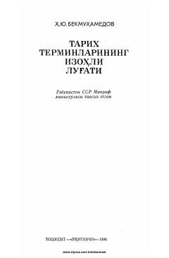

TTTarixiy atamalar va tushunchalarning izohli ilmiy-ma'lumotnoma lug'ati.
Ushbu izohli lug'at tarix fanining turli sohalariga oid ikki mingdan ortiq tushuncha va terminlarni o'z ichiga oladi. Kitobda SSSR xalqlari tarixi, qadimgi dunyo, o'rta asrlar, yangi va eng yangi davr tarixiga oid atamalarning ma'nolari atroflicha tushuntirib berilgan. Nashr oliy va o'rta maxsus o'quv yurtlari talabalari, o'qituvchilar va keng kitobxonlar ommasiga mo'ljallangan.